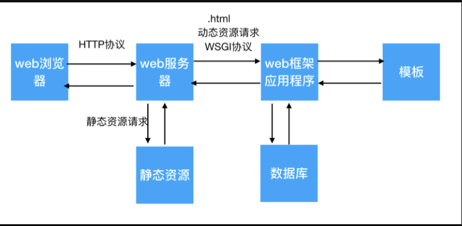

本次学习MiniWeb框架的目的并不是能够完成框架的编写，而是需要学习框架编写中的思想，主要是理解路由表的定义和自动维护、视图函数的作用、前后端分离的开发思想，以及WSGI协议中的application函数的实现与调用的思想。
以往，我们多完成的是静态web服务器，主要处理的都是一些已经‘写死’的数据，那么今天，我们来学习一下动态数据的处理。
说到动态数据，我们就需要了解一个东西，那就是web框架。
所谓web框架简单地说就是用来处理数据或模板的一个py程序。
那么接下，我就简单的给大家简述一下一个浏览器访问动态数据的整体流程。
WSGI服务器网管接口（Web Server Gateway Interface）是为python语言定义的一种服务器与框架进行通信的简单接口，其接口原理就是实现application函数。
application函数格式如下：
def application(environ, func):
func('200 OK', [('Content-Type', 'text/html;charset=utf-8')])
return 'Hello MiniWeb'函数的第一个参数environ类型是一个字典，用来接收封装到字典内的请求资源路径。
函数的第二个参数func类型是一个函数，用来接收调用时传递的函数引用。
application函数在是在框架中实现，框架就是处理数据的py文件；在服务器端调用。
实现application函数并且完成数据处理的py文件我们就可以称它是WSGI接口。
首先，我们先看一张图片

这张图片完美的阐述了从浏览器到服务器到web框架的应用。
首先，大家需要明确一点本次开发中以.html后缀的文件为动态资源，其余均为静态资源
1.浏览器发送HTTP请求报文给服务器，
2.服务器根据HTTP请求报文的请求路径进行判断，
如果请求的是静态资源，那么服务器直接将静态资源的数据读出来然后拼接成HTTP响应报文返回给浏览器；
如果请求的是动态资源，那么服务器会将动态资源请求发送给web框架。
3.web框架接收到服务器转发的请求后，先对请求进行判断，
如果是请求模版那么web框架将会去模版中查找请求的模板，如果查询到请求的模板那就把模板数据返回给web服务器，再有服务器返回给浏览器，
如果请求的是数据那么web框架将会去数据库中进行操作，将查询等操作的数据或返回值，返回给web服务器，再有服务器返回给浏览器。
至此一个整体流程就阐述完毕了。
# 1.导入socket模块
import socket
import threading
import FreamWork
# 创建服务器类
class HttpServerSocket(object):
# 给服务器类的对象设置属性
def __init__(self):
# 2.创建Socket对象
self.server_socket = socket.socket(socket.AF_INET, socket.SOCK_STREAM)
# 3.设置端口复用
self.server_socket.setsockopt(socket.SOL_SOCKET, socket.SO_REUSEADDR, True)
# 4.绑定端口
self.server_socket.bind(('', 8000))
# 5.设置监听
self.server_socket.listen(128)
def start(self):
while True:
# 6.等待客户端连接
client_socket, ip_port = self.server_socket.accept()
# gevent.spawn(self.task, client_socket, ip_port)
print("上线了", ip_port)
threading.Thread(target=self.task, args=(client_socket, ip_port), daemon=True).start()
def task(self, client_socket, ip_port):
# 7.接收数据
recv_data = client_socket.recv(1024).decode('utf-8')
print(recv_data)
if not recv_data:
print("客户端：%s下线了，端口号为：%s" % ip_port)
return
# 8.发送数据
# 判断请求资源是否包含参数
# 请求行格式：GET /index.html HTTP/1.1
recv_path = recv_data.split()[1]
# print("第一次分割",recv_path)
# 如果有参数则以？分割
if '?' in recv_path:
real_recv_path = recv_path.split('?')[0]
# print("?分割",real_recv_path)
else:
# 如果没有参数，则保持请求路径不变
real_recv_path = recv_path
# print("无？分割",real_recv_path)
# 设置没指定资源路径，默认返回index.html
if real_recv_path == '/':
real_recv_path = '/index.html'
# 判断请求资源是静态资源还是动态资源
if real_recv_path.endswith('.html'):
env = {'PATH_INFO': real_recv_path}
# 调用框架中的application函数
response_body = FreamWork.application(env, self.start_response)
response_line = 'HTTP/1.1 %s\r\n' % self.status
response_header = 'Server: PWS/1.0\r\n'
# self.response_header 接收的是列表中保存的元组需要进行解包处理
response_header += '%s :%s\r\n' % self.response_header[0]
send_data = (response_line + response_header + '\r\n' + response_body).encode('utf8')
client_socket.send(send_data)
client_socket.close()
else:
# 判断请求的资源路径是否存在
try:
with open(f"static{real_recv_path}", "rb") as file:
response_body = file.read()
except Exception as e:
# 如果不存在则返回404
response_line = 'HTTP/1.1 404 NOT FOUND\r\n'
response_header = 'Server: PWS/1.0\r\n'
response_body = 'sorry nor found page!\r\n'.capitalize()
send_data = (response_line + response_header + '\r\n' + response_body).encode('utf-8')
client_socket.send(send_data)
else:
# 如果存在则换回请求的页面信息
response_line = 'HTTP/1.1 200 OK\r\n'
response_header = 'Server: PWS/1.0\r\n'
send_data = (response_line + response_header + '\r\n').encode('utf-8') + response_body
client_socket.send(send_data)
finally:
# 断开与客户端连接
client_socket.close()
def start_response(self, status, response_header):
self.status = status
self.response_header = response_header
def __del__(self):
# 当服务端程序结束时停止服务器服务
self.server_socket.close()
def main():
http_socket = HttpServerSocket()
http_socket.start()
if __name__ == '__main__':
main()1.通过分解后的请求资源路径的后缀判断请求的是否是html页面，如果是则认为请求的是动态资源；
2.将动态资源路径封装到一个字典中，并将字典和函数的引用传递给application函数，
3.web框架（application函数）根据传递的资源路径去模板中查找是否含有请求的模板，如果有则读取模版数据并返回；
4.接收到web框架（application函数）返回的数据，并拼接HTTP响应报文，然后通过浏览器套接字将HTTP响应报文发送给浏览器，最后关闭与浏览器连接。
采用前后端分离思想进行数据传输，在数据传输过程中，需要将数据转换成JSON数据，
这时候需要注意数据库中的Decimal类型和Datetime类型为数据库独有类型的数据都需要转换成字符串才能够进行数据类型转换；
否则数据转换不成功，则无法为Ajax提供数据支持，那么前段页面会一直提示，Ajax请求失败。
import json
import db
# 定义路由表
router_table = {}
# 定义接口函数
def application(environ, start_response):
start_response('200 OK', [('Content-Type', 'text/html;charset=utf-8')])
path = environ['PATH_INFO']
func = error
if path in router_table:
func = router_table[path]
response_body = func()
return response_body
# 定义装饰器自动维护路由表
def router(url):
def decorator(func):
def inner(*args, **kwargs):
body = func(*args, **kwargs)
return body
router_table[url] = inner
return inner
return decorator
# 定义视图函数
@router('/index.html')
def index():
with open('templates/index.html', 'r', encoding='utf-8') as file:
body = file.read()
return body
@router('/center.html')
def center():
with open('templates/center.html', 'r', encoding='utf-8') as file:
body = file.read()
return body
# 定义发送JSON数据的函数
@router('/data.html')
def josn_data():
sql = '''select * from info;'''
result = db.operation_data(sql)
# JSON数据格式：[{},{}]
data = []
for data_tuple in result:
data_dict = {}
data_dict['id'] = data_tuple[0]
data_dict['code'] = data_tuple[1]
data_dict['short'] = data_tuple[2]
data_dict['chg'] = data_tuple[3]
data_dict['turnover'] = data_tuple[4]
# decimal类型只存在于数据库中，所以需要转换成字符串进行显示
data_dict['price'] = str(data_tuple[5])
data_dict['highs'] = str(data_tuple[6])
# datetime类型只存在于数据库中，所以需要类型转换
data_dict['time'] = str(data_tuple[7])
data.append(data_dict)
# 将列表转化成JSON数据
json_data = json.dumps(data, ensure_ascii=False)
return json_data
@router('/center_data.html')
def center_data():
sql = ''' select i.code, i.short, i.chg, i.turnover,i.price, i.highs, f.note_info from info i inner join focus f on i.id = f.info_id '''
result = db.operation_data(sql)
# 定义一个列表,用来保存所有的记录 (列表对应的是 json 中的数组)
data = []
# 遍历查询结果
for t in result:
# 定义一个字典用来保存每一条记录(字典对应的是 json 中的对象)
dd = {}
# 将元组中的所有数据保存到字典中
dd['code'] = t[0]
dd['short'] = t[1]
dd['chg'] = t[2]
dd['turnover'] = t[3]
dd['price'] = str(t[4]) # 坑一: 由于下面两个字段的值在数据库是是 Decimal 类型,在转换 json 时不能直接转换,所以转成字符串
dd['highs'] = str(t[5])
dd['info'] = t[6]
data.append(dd)
# 将转换后的列表转换成 json 字符串
json_str = json.dumps(data, ensure_ascii=False) # 坑二: 在这转换时,要加参数二,不以 Ascii 码进行解析数据
print(json_str)
return json_str
def error():
return '<h1>页面加载失败！</h1>'[{"key":"value"},{"key":"value"},{"key":"value"}]在JSON数据转换时需要注意，json.dumps()会默认采用ASCII码进项解码转换，想要不使用ASCII进行转码就需要设置ensure_ascii参数，将它设置成False即可解决问题。
路由表就是一个用请求地址作为Key，装饰器内层函数的引用作为Value而形成的键值对组成的字典。
其格式为：
{
'/index.html':inner,
'/error.html':inner
}对于路由表的自动维护，我们可以通过编写带参数的装饰器来实现：
router_table = {}
def router(url):
def decorator(func):
def inner(*args, **kwargs):
func(*args, **kwargs)
router_table[url] = inner
return inner
return decorator通过@router('/index.html')语法糖来给路由表中添加数据。
1.先执行router('/index.html')，然后将装饰器decorator函数的引用返回；
2.在通过@decorator的引用，将视图函数传递给func，将inner的引用及url组成键值对保存到路由表中；
这里再给大家扩展一个概念，视图函数是MVT开发模式中的V也就是View，其主要功能是处理数据。
在编写数据库操作的代码时，需要注意的时每个函数返回值的类型，
除db_connect()返回的是数据库的连接对象外，
其余函数返回的均为查询后的数据，在调用函数时要注意。
import pymysql
def connect_db():
db = pymysql.connect(host='180.76.105.161', port=3306, user='root', password='root', database='stock_db',
charset='utf8')
# 此处返回的是数据库连接对象
return db
def operation_data(sql):
db = connect_db()
cur = db.cursor()
cur.execute(sql)
data = cur.fetchall()
cur.close()
db.close()
# 此处返回的是数据库查询后返回的数据，而不是对象
return data1.在原有的TCP服务端的基础上加上一个请求资源的判断，即判断是否是动态资源；
2.如果是动态资源，就将动态资源的请求路径发送给框架，
3.框架在进行判断，如果动态资源是模版那就读出模版的数据并返回给服务器，最后再由服务器拼接响应报文给客户端，
4.如果动态资源请求的是数据，那么框架就回到数据库中将数据查询出来，并且拼接成JSON数据格式的字符串，再将JSON数据格式的字符串转换成JSON数据，最后在返回给服务器，最后再由服务器拼接响应报文并发送给客户端。